Zoezi la sita1.Mzazi aliwagawia watoto 10 jumla ya shilingi 333,500. Ikiwa kila mtoto alipata kiasi sawa cha fedha, je, kila mmoja alipata shilingi ngapi?2.Mfanyabiashara aliuza machungwa 452 na kupata jumla ya shilingi 146,900. Ikiwa machungwa yote yaliuzwa kwa bei sawa, chungwa moja liliuzwa kwa shilingi ngapi?3.Jamila alinunua magauni 19 kwa ajili ya biashara na kulipa jumla ya shilingi 463,144. Ikiwa magauni yote yalikuwa na bei sawa, tafuta bei ya gauni moja.4.Amir aliuza maembe 285 na kupata jumla ya shilingi 119,913 na senti 75. Ikiwa maembe yote yaliuzwa kwa bei moja, je, kila embe liliuzwa bei gani?5.Wanafunzi 18 waligawana shilingi 174,499 na senti 20 kwa usawa. Je, kila mwanafunzi alipata kiasi gani cha fedha?6.Abiria 52 walilipa nauli jumla ya shilingi 973,476 na senti 40. Iwapo nauli kwa kila abiria ilikuwa sawa, je, abiria mmoja alilipa nauli kiasi gani?7.Mwalimu alinunua vitabu vya Hisabati 87 na kulipa jumla ya shilingi 842,812 na senti 50. Ikiwa vitabu vyote vilinunuliwa kwa bei sawa, je, kila kitabu kilinunuliwa kwa bei gani?8.Miche 224 ya miti iliuzwa kwa kiasi cha shilingi 615,148 na senti 80. Tafuta bei ya mche mmoja wa mti ikiwa miche yote iliuzwa kwa bei sawa.